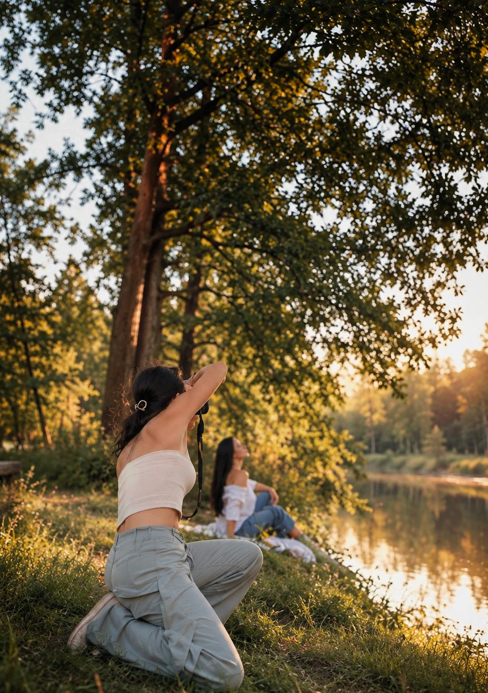

O marce
Obiektywnie to coś więcej niż nazwa. To sposób patrzenia na ludzi i chwile.
Skąd wzięła się nazwa
Obiektywnie to gra słów, ale i deklaracja. Z jednej strony — obiektyw, narzędzie, przez które patrzę na świat. Z drugiej — obiektywność, czyli chęć pokazywania rzeczy takimi, jakie są naprawdę, bez retuszu i udawania.
Marka narodziła się z przekonania, że najpiękniejsze zdjęcia nie muszą być perfekcyjne — muszą być prawdziwe. To właśnie ta filozofia prowadzi mnie od pierwszej sesji aż po dziś.
Wartości, które mnie prowadzą
Autentyczność
Nie ukrywam piegów, zmarszczek ani emocji. To one tworzą historię i sprawiają, że zdjęcie naprawdę do kogoś należy.
Bezpieczeństwo
Najpiękniejsze fotografie powstają, gdy człowiek czuje się swobodnie. Dlatego zawsze zaczynam od zbudowania tej przestrzeni.
Bliskość
Wierzę, że każdy człowiek zasługuje na to, by zostać naprawdę zauważonym — nie tylko sfotografowanym.
Fotografia to dla mnie
forma uważności.
Chcesz zatrzymać się na chwilę i naprawdę zobaczyć siebie?
Umów się na sesję i pozól sobie zobaczyć to, czego na codzień nie zauważasz.
Skontaktuj Się